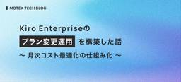

MOTEX TECH BLOG
https://tech.motex.co.jp/
エムオーテックス株式会社が運営するテックブログです。
フィード
LANSCOPE エンドポイントマネージャー オンプレミス版のログ変化検知に対する効率化
MOTEX TECH BLOG
解析・操作ログの可視化で、LANSCOPE製品におけるエラーと変化を効率的に検出。視覚的手法で時間短縮を図った取り組みを紹介します。
13時間前

Kiro Enterpriseのプラン変更運用を構築した話 〜 月次コスト最適化の仕組み化 〜
MOTEX TECH BLOG
Kiro Enterpriseのプラン変更運用を自動化し、月次コストの最適化を実現した事例紹介。
8日前

TLS証明書の47日ルール対応 〜Let's Encrypt実証例〜
MOTEX TECH BLOG
TLS証明書の有効期間短縮に備え、ACMEプロトコルとDNS-01チャレンジ認証を活用した証明書運用の自動化手法を解説します。
9日前
AWS Cost and Usage Report（CUR）でKiroのユーザー別クレジット消費量を可視化する
MOTEX TECH BLOG
AWS Cost and Usage Reportを使ったKiroのユーザー別クレジット消費量の可視化方法を紹介します。
16日前
47日証明書時代を見据えたAzure Key Vault VM拡張によるNGINX証明書運用の省力化
MOTEX TECH BLOG
47日証明書時代に向けたAzure Key Vaultを用いたSSL証明書の効率的運用法。将来的な運用課題を見据えた実践的なソリューションを解説。
23日前
Apache JMeterを活用したAWS環境での負荷テスト
MOTEX TECH BLOG
AWSとApache JMeterを使用したWebアプリケーションの負荷テストの目的、環境設定、及びトラブルシューティングについて詳解。
23日前
生成AIと相性の良いドキュメント管理を目指し、ExcelからMarkdown＋Git管理へ移行しました
MOTEX TECH BLOG
ExcelドキュメントをGitHub Copilotを活用してMarkdownに変換し、コードと同じGitリポジトリで管理するようにした取り組みについて、変換の手順から既存の利用者への配慮や運用上の工夫まで紹介します。
1ヶ月前
Amazon CloudWatch アラームの繰り返し通知を AWS で実装する
MOTEX TECH BLOG
AWSを利用したAmazon CloudWatchアラームの効果的な繰り返し通知方法を解説。重要な通知を見逃さないための設定手順をステップごとに詳述しています。
1ヶ月前
AI コーディングツールのセキュリティ制約をファイル配信で組織展開する【Kiro CLI × LANSCOPE エンドポイントマネージャー クラウド版】
MOTEX TECH BLOG
AI コーディングツールのセキュリティ設定を組織全体に統一したい方へ。LANSCOPE エンドポイントマネージャー クラウド版のファイル配信機能で、Kiro CLI の steering ファイルを Windows デバイスへ自動展開する手順を解説します。
1ヶ月前
【2日間で"開発のリアル"を体感！】エムオーテックス 夏季仕事体験 2026 募集開始しました！
MOTEX TECH BLOG
LANSCOPE開発フローの疑似体験とクラウドサービスの活用を通じて、実際の製品開発に近い貴重な経験を積めるエムオーテックスの夏季仕事体験をご紹介。
1ヶ月前
2026 Japan AWS Jr.Champions の社内選考会を開催しました
MOTEX TECH BLOG
エムオーテックス初の Japan AWS Jr.Champions として、2026年度の社内選考会を企画・運営しました。6名の応募希望者に対する準備支援から、AWS PSA を招いた公平な審査プロセスまで、若手エンジニア育成の取り組みを紹介します。
1ヶ月前
Microsoft Entra認証で標準化するAzure Database for PostgreSQL Flexible Serverの権限管理
MOTEX TECH BLOG
Azure Database for PostgreSQL Flexible ServerにMicrosoft Entra認証を導入し、セキュリティとガバナンスを強化する方法を詳しく解説。グループベースの権限管理とその運用例を紹介します。
2ヶ月前
AWS Certified Advanced Networking Specialty を満点合格した勉強方法まとめ
MOTEX TECH BLOG
本記事ではAWS Certified Advanced Networking Specialtyに満点合格した筆者が、「余裕を持って」試験に合格するための勉強方法を紹介します。
2ヶ月前
Amazon DynamoDB Transactions でキー項目以外の一意制約を実現する
MOTEX TECH BLOG
Amazon DynamoDB ではプライマリキー以外の属性に一意制約を設定する標準機能がありません。本記事では、Amazon DynamoDB Transactions を活用してキー項目以外の一意制約を実現する方法を、具体的なコード実装とともに解説します。
2ヶ月前
Security Hub CSPMの棚卸し運用を見直し：見える化と自動化の方針
MOTEX TECH BLOG
AWS Security Hub CSPMの棚卸し運用をオートメーション化するための検討結果をまとめた記事です。アップデートによるリソース増加に対応し、作業負荷を軽減するための具体的な手法を紹介します。
3ヶ月前
AWS Certified Machine Learning - Specialty 合格体験記 - 機械学習未経験からの学習の流れと試験所感
MOTEX TECH BLOG
本記事では機械学習未経験者がAWS Certified Machine Learning - Specialtyに合格するまでの学習方法を紹介します。
3ヶ月前
AWSのターミナルログイン手法の選択について
MOTEX TECH BLOG
AWSにおけるEC2インスタンスへの効率的なログイン手法を解説。特に費用対効果とセキュリティ面に優れたEC2 Instance Connectを推奨。
3ヶ月前
構成図からは見えづらい CloudFront の効果
MOTEX TECH BLOG
CloudFrontはキャッシュ以上の役割があることをご存知ですか？この記事では、AWSのサービス設計においてCloudFrontを敢えて利用するメリットを解説します。
3ヶ月前
Chrome DevTools MCPを活用したChrome拡張機能開発の手法とその効果
MOTEX TECH BLOG
Chrome DevTools MCPとKiro-CLIを使った、Chrome拡張機能の効率的な開発手法を解説。自然言語での指示による開発自動化を実現し、その効果と課題を検証。
4ヶ月前
Kiro-CLIを使ってDynamoDBのリザーブドキャパシティ購入量見積もりを効率化する
MOTEX TECH BLOG
DynamoDBリザーブドキャパシティの購入検討を効率化するため、Kiro CLIを使ったグラフ生成手順を解説。効率的な作業と共通認識の形成を実現しました。
4ヶ月前
IaC未経験者によるCloudFormationスタック分割の記録
MOTEX TECH BLOG
IaC未経験者がCloudFormationのスタック分割に挑戦した経験を記録した記事です。具体例と考え方を通じて、スタック分割を考えるヒントを得られます。
4ヶ月前
CloudFormation で Amazon Bedrock Knowledge Bases を構築してみた - Auth0 Changelog 分析システムを事例に
MOTEX TECH BLOG
Amazon Bedrock Knowledge Baseを活用し、Auth0 Changelogの自動化分析システムを構築。CloudFormationを使用した設定手法を解説。
4ヶ月前
macOSデバイスへのログイン時に自動でLimaのインスタンスを起動する方法
MOTEX TECH BLOG
本記事ではmacOSログイン時にLimaインスタンスを自動起動する設定方法とパス設定問題の解決手順を紹介します。
4ヶ月前
自社のパワーポイントテンプレートを使って編集可能なパワポを自動生成するWebツールを作った話
MOTEX TECH BLOG
AWSと独自AI基盤を融合して、編集可能なPPTを自動生成。ストーリー設計を効率化し、社内作業の質向上とスピードアップを実現します。
4ヶ月前
Amazon MacieとクラウドDLPの特徴・注意点まとめ
MOTEX TECH BLOG
AWSにおけるデータ損失防止（DLP）サービス、Amazon Macieの特徴や検証例を紹介。クラウド環境でのデータ保護に関心のある方に向けた必見の記事です。具体的な設定方法や注意点についても解説しています。
4ヶ月前
Amazon Managed Service for Apache Flink を用いて PC 操作ログ基盤をリプレースしました
MOTEX TECH BLOG
Amazon Data Firehoseの動的パーティショニングのクォータを回避するために、Amazon Managed Service for Apache Flinkを用いてPC操作ログ基盤をリプレースした事例を紹介します。
4ヶ月前
製品品質向上への取り組み 第 2 弾：Delphi の静的コード解析 × GitHub Copilot によるコードレビュー支援
MOTEX TECH BLOG
静的コード解析の結果を GitHub Copilot で一次レビューし、優先度付けや根拠提示でレビュー効率と一貫性を向上させる試み。
5ヶ月前